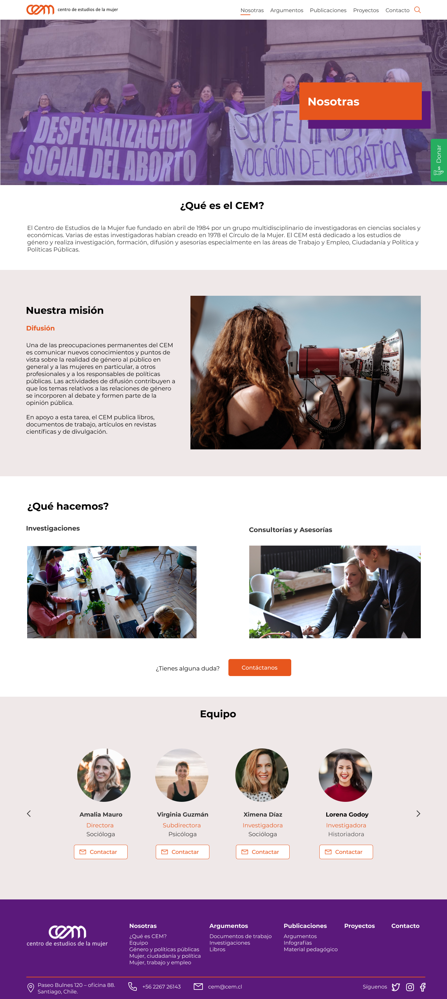
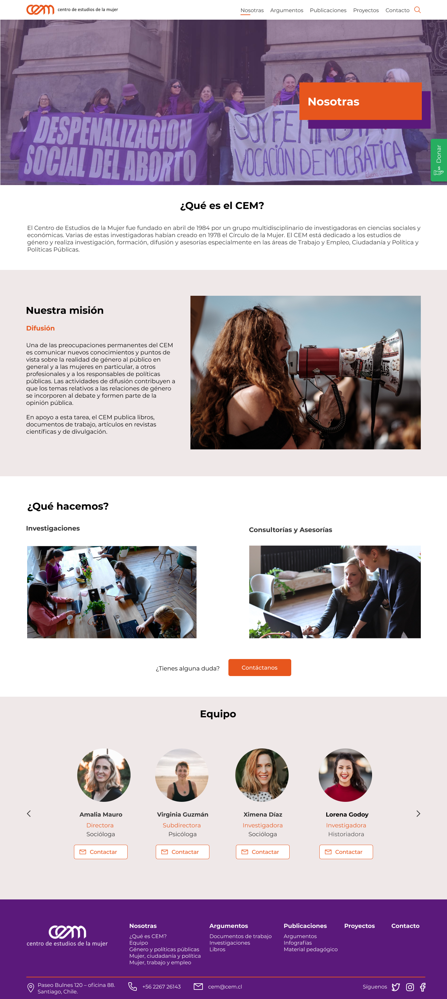

Service Design - CEM
.png)
 

Información del Proyecto
- Categoria: Re-Diseño Web
- Cliente: Cem
- Fecha del Proyecto: Septiembre, 2020
- Proyecto Demo:
En la actualidad, CEM ha visto disminuida la interacción de sus usuarios visitantes con respecto al recorrido dentro del sitio.
Igualmente, muchas de las usuarias que lo visitan se confunden con respecto a la información y contenidos que entrega este sitio.
En este sentido, el desafío para este proyecto se centra en los siguientes aspectos:
1.- Optimizar el diseño del sitio, redefiniendo la estructura, considerando la oportunidad de que los usuarios se amplíen dentro de su público objetivo.
2.- Implementar mejoras dentro de la interfaz, identificando los contenidos, rediseñando la estructura e identificando cuáles serían los campos más necesarios en función de las categorías de información y eliminar aquellos que no son relevantes, para mejorar la experiencia de uso.
3.- Entregar recomendaciones sobre protocolos, plataformas que ayuden al soporte y resolución de las necesidades detectadas en los puntos anteriores.
Para lograr un producto final, se realizo un proceso de investigación Benchmark, Entrevista con Cliente, además de realizar una Encuesta de Percepción, realizando Entrevistas a Usuarias que colaboran en CEM incluyendo una actividad de Card Sorting.
Después de todo el proceso de investigación y sintetización se obtuvo un gran descubrimiento, el cual sentó las bases para continuar con las siguientes etapas.
El prototipo fue basado en mejorar el diseño visual, ocupar un lenguaje más cercano, implementar un buscador y un menú navegable mas amigable.